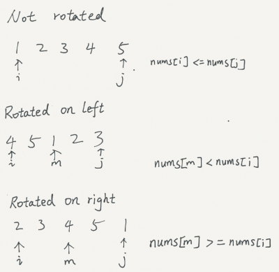

LeetCode Problem
153. Find Minimum in Rotated Sorted Array
Link to LeetCode
Suppose an array of length n sorted in ascending order is rotated between 1 and n times.
For example, the array nums = [0,1,2,4,5,6,7] might become:
- [4,5,6,7,0,1,2] if it was rotated 4 times.
- [0,1,2,4,5,6,7] if it was rotated 7 times.
Notice that rotating an array [a[0], a[1], a[2], ..., a[n-1]] 1 time results in the array [a[n-1], a[0], a[1], a[2], ..., a[n-2]].
Given the sorted rotated array nums of unique elements, return the minimum element of this array.
You must write an algorithm that runs in O(log n) time.
Example 1:
Input: nums = [3,4,5,1,2]
Output: 1
Explanation: The original array was [1,2,3,4,5] rotated 3 times.
Example 2:
Input: nums = [4,5,6,7,0,1,2]
Output: 0
Explanation: The original array was [0,1,2,4,5,6,7] and it was rotated 4 times.
Example 3:
Input: nums = [11,13,15,17]
Output: 11
Explanation: The original array was [11,13,15,17] and it was rotated 4 times.
Analysis
This problem is a binary search and the key is breaking the array to two parts, so that we can work on half of the array each time.
If we pick the middle element, we can compare the middle element with the leftmost (or rightmost) element. If the middle element is less than leftmost, the left half should be selected; if the middle element is greater than the leftmost (or rightmost), the right half should be selected. Using recursion or iteration, this problem can be solved in time log(n).
In addition, in any rotated sorted array, the rightmost element should be less than the left-most element, otherwise, the sorted array is not rotated and we can simply pick the leftmost element as the minimum.

/*
To understand the boundaries, use the following 3 examples:
[2,1], [2,3,1], [3,1,2]
*/
public int findMin(int[] nums) {
if(nums==null || nums.length==0)
return -1;
int i=0;
int j=nums.length-1;
while(i<=j){
if(nums[i]<=nums[j])
return nums[i];
int m=(i+j)/2;
if(nums[m]>=nums[i]){
i=m+1;
}else{
j=m;
}
}
return -1;
}